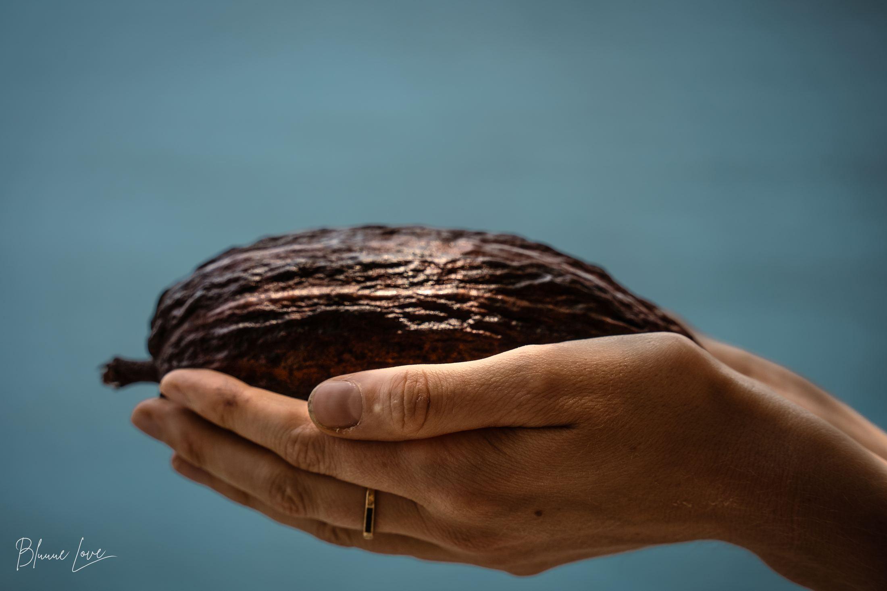
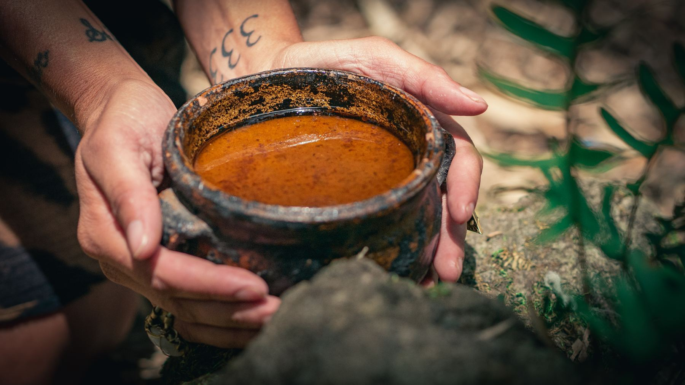
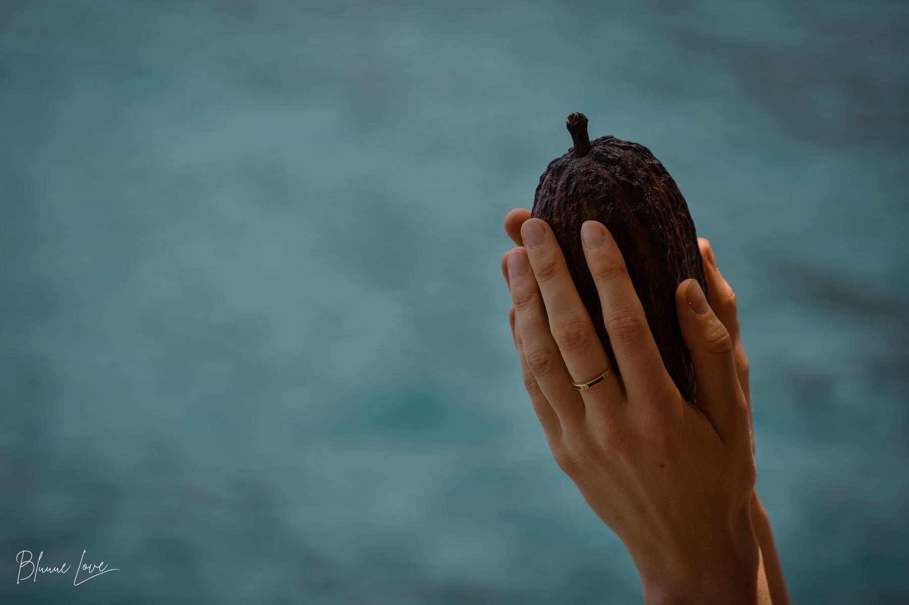
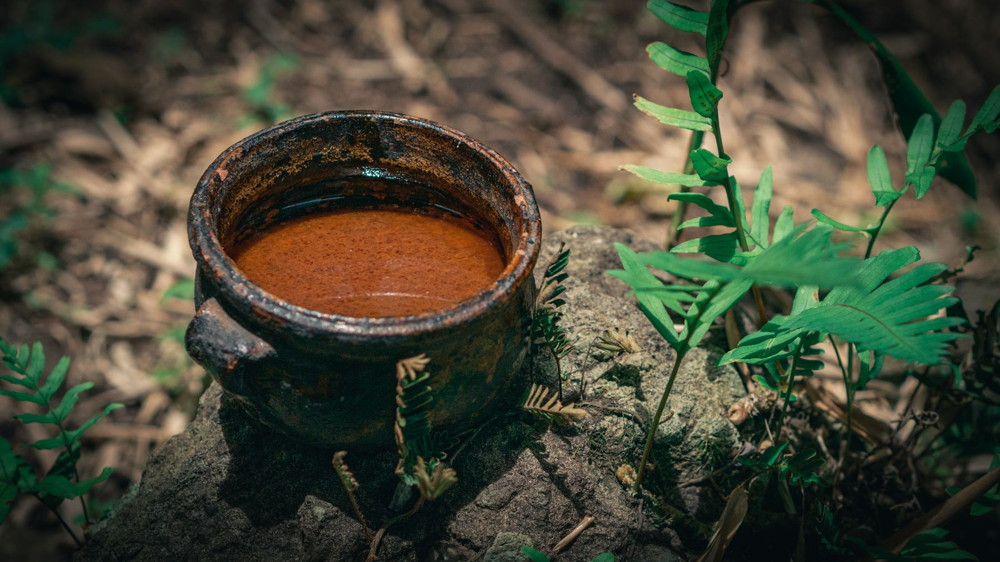

100% Ceremonial Cacao · Grown at 1,600m, Lake Atitlán
This is cacao.
Not candy.
Stone-ground and single-origin, pressed from pods grown in volcanic soil and harvested by the Mayan hands who have kept this tradition alive for millennia. No sugar. No fillers. No shortcuts — just cacao, as it was always meant to be.
Our Stand
The chocolate aisle sold you a myth. We're done being quiet about it.
Somewhere between the volcano and the vending machine, an ancient plant medicine got turned into a candy bar.
"Ceremonial grade" has become a sticker — slapped on cheap, alkalized, sugar-cut cocoa that never touched a volcano, never met a machete, and never passed through the hands of the grandmothers who still ferment cacao the way their great-grandmothers did. It's sold in bulk, roasted for shelf life, blended for a smoother sell. It is, quite simply, not what it claims to be.
We think that's a quiet kind of theft — of a tradition, of a livelihood, and of your own ability to feel what real cacao actually does. So we'll say the unfashionable thing out loud: if it melts in five seconds and tastes like dessert, it isn't ceremonial cacao. It's chocolate wearing a costume.
- ✕What the industry sellsAlkalized, deodorized cocoa mass — cut with sugar, milk solids, and soy lecithin, then marketed as "ceremonial" for a premium.
- ✕Where it actually comes fromAnonymous commodity blends, traded through brokers who never meet the farmer, priced to reward volume over quality.
- ✕What gets lostThe fat, the fiber, the bitterness — everything that makes cacao a medicine instead of a snack — stripped out in processing.
- ✓What we do insteadOne origin, one relationship, one process: hand-harvested, sun-fermented, stone-ground pods from the farming families we know by name.

Origin
Born of fire, kept by water.
Lake Atitlán sits inside the collapsed crater of a volcano that erupted eighty-four thousand years ago, ringed today by three younger volcanoes — Atitlán, Tolimán, San Pedro — still rising above its shore. The soil here is mineral-dense, iron-rich, still remembering the fire that made it.
Cacao has grown in this region since long before it had a border on a map. The Tz'utujil and Kaqchikel Maya who farm these highlands are not suppliers to us — they are the reason this cacao exists at all. We grow nothing here that they did not teach us.


The Craft
Heart over hurry.
Every pod is cut by hand, at the moment it's ready — not the moment a shipping schedule demands. The beans are fermented under banana leaves, sun-dried on open patios, then stone-ground into paste using the same technique used here for generations. Nothing is added. Nothing is taken away.
No alkalizing. No conching. No emulsifiers to make it melt like candy. What you get is exactly what came off the tree — full-fat, whole-bean, unmistakably alive.
Who Grows It
Farmed by families, not factories.
We buy directly from the Mayan farming families who tend these groves — paying well above commodity cacao prices, in person, every harvest. No brokers. No anonymous co-ops. No middlemen deciding what a farmer's work is worth.
Direct trade
We know the families who grow our cacao by name, and we pay them directly — a fair, agreed price paid every season, not whatever the commodity market allows.
Grown without chemicals
Our groves are farmed the way this land has always been farmed — no synthetic pesticides, no chemical fertilizers, no shortcuts that trade the soil's future for this year's yield.
Tradition, not trend
Ceremonial cacao isn't a wellness fad to us. It's a living Mayan practice we were welcomed into, and one we work every day to honor rather than exploit.
The Ceremony
Cacao was never meant to be eaten alone.
Long before it was chocolate, cacao was medicine — brewed whole, taken with intention, shared in circle. This is the plant we're trying to bring you back to: heart-opening, grounding, wide awake.





"We're not trying to sell you a wellness trend. We're trying to hand you back something that was almost taken from all of us — a plant, a place, and the people who never stopped tending both."— Volcano Spirit Cacao, founding note

The Cacao
100% ceremonial cacao. Nothing else.
One ingredient: cacao. Stone-ground into a dense, rustic paste and pressed into blocks, exactly as it's been prepared at Lake Atitlán for generations.
- Single-origin — Lake Atitlán, Guatemala
- Hand-harvested and sun-fermented
- Stone-ground, small batch, no additives
- No sugar, dairy, or emulsifiers — ever
- Direct trade with Mayan farming families
Join Us
Come sit in circle with us — or just ask us anything.
Whether you want to order cacao, host a ceremony, or bring this into your own community, we'd love to hear from you. The fastest way to reach us is Instagram — we read every message ourselves.